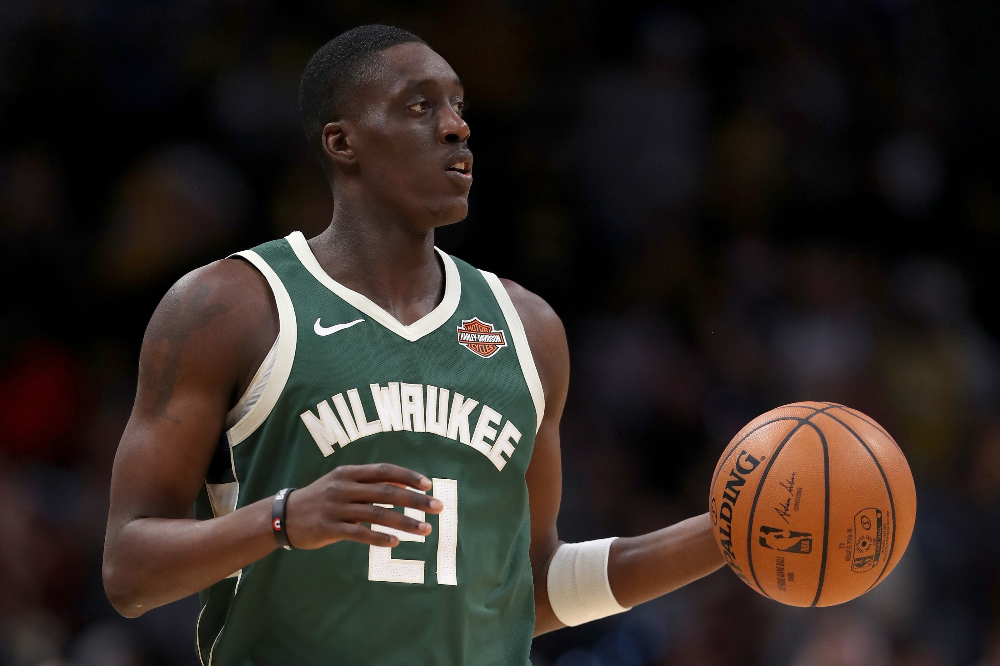
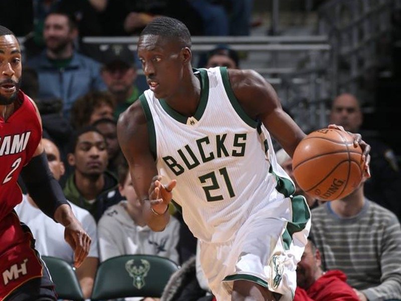
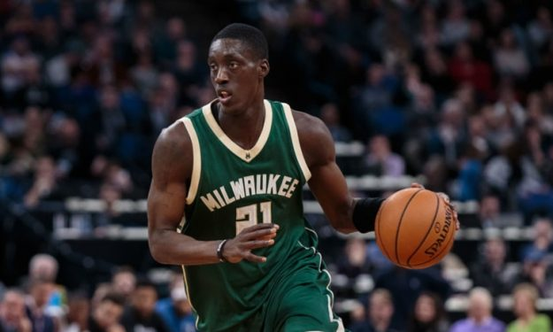
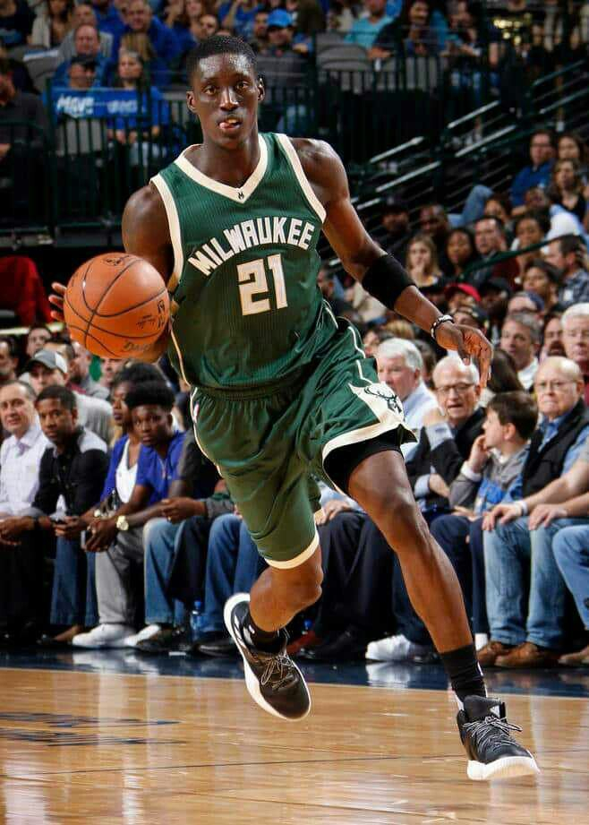
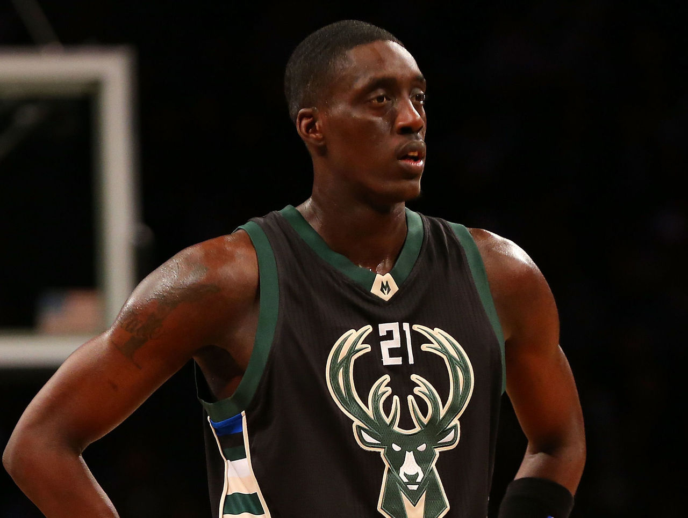
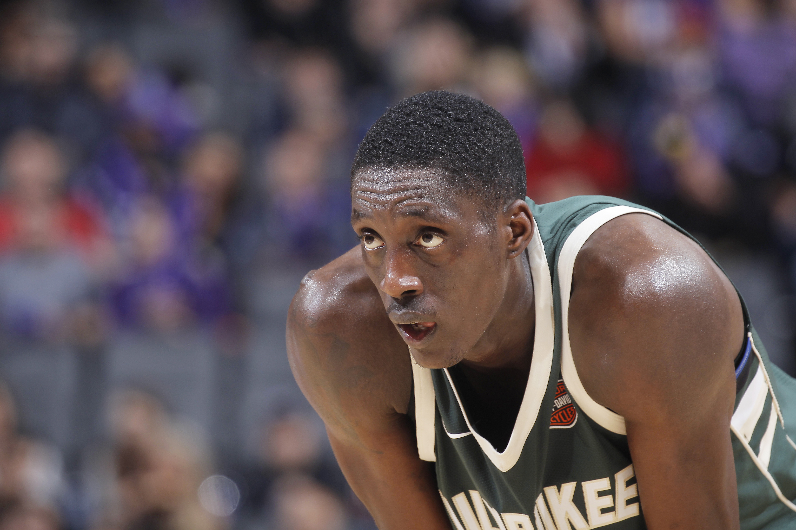

NAME:
Tony Snell
  



Birthdate:
(born November 10, 1991) is an American professional basketball player for the Maine Celtics of the NBA G League
Salary:
Tony Snell ; Contract: 1 yr(s) / $2,389,641 ; Average Salary: $2,389,641 ; Guaranteed at Signing, $2,389,641 ; Signed Using: Free Agent/Minimum ; Free Agent: 2022
Awards:
Tony Snell ranking in NBA awards vote: All-Star ; 2017: 199th between Deron Williams and J.J. Barea ; 2018: 250th between Tyler Johnson and Joffrey Lauvergne.
Back